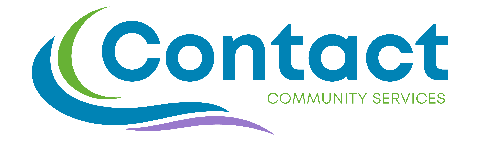

<!DOCTYPE html>
<html lang="en">
<head>
<meta charset="UTF-8">
<meta name="viewport" content="width=device-width, initial-scale=1.0">
<title>What Do You Think?</title>

<style>
*{
    box-sizing:border-box;
}

body{
    margin:0;
    min-height:100vh;
    font-family:"Segoe UI", system-ui, sans-serif;
    background:linear-gradient(135deg, #2575fc 0%, #00c6ff 50%, #6a11cb 100%);
    display:flex;
    justify-content:center;
    align-items:center;
    padding:20px;
}

.card{
    background:white;
    width:100%;
    max-width:700px;
    padding:32px;
    border-radius:24px;
    box-shadow:0 20px 60px rgba(0,0,0,.20);
    animation:fadeIn .4s ease;
}

h1,h2{
    margin-top:0;
}

.subtitle{
    color:#555;
    margin-bottom:24px;
}

.progress{
    width:100%;
    height:10px;
    background:#e7e7e7;
    border-radius:999px;
    overflow:hidden;
    margin-bottom:30px;
}

.progress-fill{
    height:100%;
    background:linear-gradient(90deg, #00c6ff, #22c55e);
    width:0%;
    transition:width .5s ease;
}

.question{
    font-size:1.45rem;
    font-weight:600;
    line-height:1.5;
    color:#1f2937;
    margin-bottom:28px;
}

.answer-btn{
    min-height:80px;
    width:100%;
    text-align:left;
    border:2px solid transparent;
    background:#f8fafc;
    border-radius:16px;
    padding:22px;
    margin-top:12px;
    cursor:pointer;
    font-size:1.05rem;
    font-weight:500;
    font-family:inherit;
    transition:
        transform .2s ease,
        box-shadow .2s ease,
        background .2s ease,
        border-color .2s ease;
}

.answer-btn:hover{
    transform:translateY(-2px);
    border-color:#2575fc;
    background:#eef6ff;
    box-shadow:0 10px 25px rgba(0,0,0,.08);
}

.answer-btn:active{
    transform:scale(.98);
}

.correct{
    background:#ecfdf3;
    border-left:6px solid #22c55e;
    padding:18px;
    border-radius:12px;
    animation:fadeIn .3s ease;
}

.insight{
    background:#fff7ed;
    border-left:6px solid #f97316;
    padding:18px;
    border-radius:12px;
    animation:fadeIn .3s ease;
}

.continue-btn{
    margin-top:20px;
    border:none;
    background:#2563eb;
    color:white;
    padding:14px 22px;
    border-radius:12px;
    font-size:1rem;
    font-family:inherit;
    cursor:pointer;
    transition:.2s;
}

.continue-btn:hover{
    background:#1d4ed8;
}

.research-label{
    text-transform:uppercase;
    letter-spacing:.08em;
    font-size:.85rem;
    font-weight:700;
    opacity:.75;
    margin-bottom:12px;
}

.research-title{
    font-size:1.45rem;
    font-weight:700;
    line-height:1.3;
    margin-bottom:16px;
    color:#111827;
}

.research-explanation{
    font-size:1.05rem;
    line-height:1.7;
    color:#374151;
}

.completion{
    text-align:center;
}

.badge{
    display:inline-block;
    background:#ecfdf3;
    color:#166534;
    padding:10px 18px;
    border-radius:999px;
    font-weight:bold;
    margin-bottom:20px;
}

.big-emoji{
    font-size:4rem;
    margin-bottom:10px;
}

.logo{
    max-width:320px;
    width:100%;
    margin-bottom:20px;
}

.welcome-box{
    background:#eef6ff;
    padding:20px;
    border-radius:16px;
    margin:20px 0;
    color:#444;
    line-height:1.7;
    text-align:left;
}

.brand-988,
.brand-211{
    color:white;
    border-radius:16px;
    padding:20px 24px;
    text-align:left;
}

.brand-988{
    background:#005EB8;
}

.brand-211{
    background:#F58220;
}

.brand-head{
    display:flex;
    align-items:baseline;
    gap:12px;
    margin:0 0 8px;
}

.brand-number{
    font-size:2rem;
    font-weight:800;
    line-height:1;
}

.brand-name{
    font-size:1rem;
    font-weight:600;
    opacity:.95;
}

.brand-text{
    margin:0;
    font-size:.95rem;
    line-height:1.5;
    opacity:.92;
}

.welcome-meta{
    color:#6b7280;
    font-size:.95rem;
    margin:24px 0 0;
}

.info-cards{
    display:flex;
    flex-direction:column;
    gap:15px;
    margin-top:20px;
}


.btn-row{
    display:flex;
    flex-wrap:wrap;
    gap:12px;
    justify-content:center;
    margin-top:20px;
}

.btn-row .continue-btn{
    margin-top:0;
}

.secondary-btn{
    border:2px solid #2563eb;
    background:white;
    color:#2563eb;
    padding:12px 22px;
    border-radius:12px;
    font-size:1rem;
    font-family:inherit;
    cursor:pointer;
    transition:.2s;
}

.secondary-btn:hover{
    background:#eef6ff;
}

.answers-intro{
    color:#555;
    margin:0 0 4px;
}

.answers-list{
    margin-top:24px;
    display:flex;
    flex-direction:column;
    gap:16px;
    text-align:left;
}

.answer-item{
    background:#f8fafc;
    border-radius:16px;
    padding:20px;
}

.answer-q{
    font-weight:600;
    color:#1f2937;
    line-height:1.5;
    margin-bottom:12px;
}

.answer-option{
    padding:10px 14px;
    border-radius:10px;
    margin-top:8px;
    color:#6b7280;
    background:white;
    border:1px solid #e5e7eb;
}

.answer-option.is-correct{
    color:#166534;
    background:#ecfdf3;
    border:1px solid #bbf7d0;
    font-weight:600;
}

.answer-why{
    margin-top:12px;
    color:#374151;
    line-height:1.6;
    font-size:.95rem;
}

@keyframes fadeIn{
    from{
        opacity:0;
        transform:translateY(10px);
    }
    to{
        opacity:1;
        transform:translateY(0);
    }
}
</style>
</head>

<body>

<div class="card">

    <div class="progress">
        <div id="progressFill" class="progress-fill"></div>
    </div>

    <div id="content"></div>

</div>

<script>

const TOTAL_QUESTIONS = 2;

const questions = [

{
    question: "Which is more strongly associated with suicidal thoughts?",
    options: [
        "Feeling sad",
        "Feeling trapped with no way forward"
    ],
    correct: 1,
    explanation: "Feelings of <strong>entrapment</strong> and <strong>hopelessness</strong> are often stronger indicators of suicide risk than sadness alone."
},

{
    question: "Which service would be most appropriate for someone facing eviction?",
    options: [
        "988",
        "211"
    ],
    correct: 1,
    explanation: "211 connects people with <strong>housing</strong>, <strong>food</strong>, <strong>utility assistance</strong>, <strong>transportation</strong>, and many other community resources."
},

{
    question: "Which is more protective against suicide?",
    options: [
        "Feeling independent",
        "Feeling connected to other people"
    ],
    correct: 1,
    explanation: "Strong <strong>social connection</strong> and a sense of <strong>belonging</strong> are among the most well-established protective factors against suicide."
},

{
    question: "Which has a greater influence on wellbeing?",
    options: [
        "Personal choices",
        "Living conditions and environment"
    ],
    correct: 1,
    explanation: "<strong>Housing</strong>, <strong>safety</strong>, <strong>transportation</strong>, <strong>social connection</strong>, and <strong>opportunity</strong> all influence wellbeing."
},

{
    question: "Which is the bigger barrier?",
    options: [
        "Resources don't exist",
        "Resources exist but people can't find them"
    ],
    correct: 1,
    explanation: "Many communities already have resources available. The challenge is often <strong>finding</strong>, <strong>understanding</strong>, and <strong>accessing</strong> those services."
},

{
    question: "Which is more closely linked to suicide risk?",
    options: [
        "The number of problems a person has",
        "Whether they believe things can improve"
    ],
    correct: 1,
    explanation: "<strong>Hopelessness</strong> and a belief that things cannot improve are strongly associated with suicide risk."
},

{
    question: "Which may prevent more future crises?",
    options: [
        "Affordable housing",
        "Additional psychiatric beds"
    ],
    correct: 0,
    explanation: "Housing stability affects <strong>stress</strong>, <strong>safety</strong>, <strong>financial wellbeing</strong>, and access to <strong>community support</strong>."
},

{
    question: "Which is more likely to improve community mental health?",
    options: [
        "Mental health awareness campaigns",
        "Places where people naturally connect"
    ],
    correct: 1,
    explanation: "Places that encourage <strong>belonging</strong> and <strong>connection</strong> are strongly associated with positive mental health."
},

{
    question: "Which helps more during emotional distress?",
    options: [
        "Knowing someone cares",
        "Receiving advice"
    ],
    correct: 0,
    explanation: "People often benefit from feeling <strong>understood</strong> and <strong>supported</strong> before they are ready to receive advice."
},

{
    question: "When does suicide prevention begin?",
    options: [
        "When someone calls 988",
        "Before a crisis develops"
    ],
    correct: 1,
    explanation: "Modern prevention efforts focus on community conditions, support systems, and resources long before a crisis occurs."
},

{
    question: "If you're worried about someone, which is more likely to be true about asking them directly about suicide?",
    options: [
        "It tends to introduce thoughts they hadn't had before",
        "It tends to give them room to talk about thoughts they already have"
    ],
    correct: 1,
    explanation: "Research has not found that asking about suicide increases suicidal thoughts. For many people, being asked directly brings <strong>relief</strong> and opens a <strong>conversation</strong>."
},

{
    question: "When someone contacts 988, which outcome is more common?",
    options: [
        "A responder talks with them and the contact ends without emergency dispatch",
        "A responder arranges for emergency services to go to their location"
    ],
    correct: 0,
    explanation: "Most contacts are resolved through <strong>conversation alone</strong>. Emergency dispatch is used in only a small share of cases."
},

{
    question: "Which is a more accurate description of intense suicidal urges?",
    options: [
        "They often ease with time, even if the underlying problem remains",
        "They usually stay just as strong until the underlying problem is solved"
    ],
    correct: 0,
    explanation: "The most intense moments of a crisis are often <strong>temporary</strong>. Time, support, and safety can help someone get through the peak, even before the larger problems are resolved."
},

{
    question: "Which is more accurate about calling 211?",
    options: [
        "They help you find local services based on your situation",
        "They connect you to services only after confirming you qualify"
    ],
    correct: 0,
    explanation: "211 helps people <strong>find and understand</strong> local resources. Individual services may have their own eligibility rules, but you don't have to qualify just to ask what's available."
},

{
    question: "After someone has been through a crisis, which tends to be more helpful?",
    options: [
        "Giving them space to recover on their own terms",
        "Staying in light, regular contact, like a brief message"
    ],
    correct: 1,
    explanation: "Studies of <strong>caring contacts</strong>, such as brief check-in messages after a crisis, have been linked to fewer later attempts. Low-pressure contact tells people they haven't been forgotten."
},

{
    question: "Which statement better matches research on limiting access to dangerous means during a crisis?",
    options: [
        "People usually find another way, so it makes little difference",
        "Added time and distance can give a crisis a chance to pass"
    ],
    correct: 1,
    explanation: "Many suicidal crises are brief, and research suggests most people <strong>do not simply switch methods</strong> when one is harder to reach. Time and distance can save lives."
},

{
    question: "Which phrase do prevention organizations generally recommend?",
    options: [
        "Died by suicide",
        "Completed suicide"
    ],
    correct: 0,
    explanation: "'Completed' can sound like an achievement. <strong>Died by suicide</strong> is neutral and factual, and it avoids framing a death as a success or a crime."
},

{
    question: "A coworker has seemed down for weeks but hasn't mentioned suicide. Which is a reasonable step?",
    options: [
        "Call or text 988 to talk through how to support them",
        "Wait until they bring up suicide before contacting a crisis line"
    ],
    correct: 0,
    explanation: "You don't need certainty, or to be the person in crisis, to contact 988. Responders can help <strong>friends, family, and coworkers</strong> think through how to support someone they're worried about."
},

{
    question: "When a crisis seems to be set off by one event, like a job loss, what's usually going on?",
    options: [
        "The event was the main cause",
        "The event landed on top of stress that had been building"
    ],
    correct: 1,
    explanation: "Suicide rarely has a <strong>single cause</strong>. A triggering event often arrives on top of <strong>accumulated pressures</strong> like isolation, strain, and loss."
},

{
    question: "A neighbor is facing eviction but seems calm about it. Which response fits best?",
    options: [
        "Respect their calm and give them privacy",
        "Check in gently and offer to help find support"
    ],
    correct: 1,
    explanation: "Housing instability is a recognized <strong>stressor</strong>, and people don't always look distressed from the outside. A gentle check-in keeps the door open without pressure, and a service like <strong>211</strong> can help with next steps."
},

{
    question: "Which is true of suicide rates during economic downturns?",
    options: [
        "They have tended to rise as unemployment rises",
        "They have tended to stay steady, since causes are mostly personal"
    ],
    correct: 0,
    explanation: "Research has found that rates have tended to <strong>rise</strong> when unemployment rises, which suggests that <strong>financial strain</strong> is part of the picture, not only individual factors."
},

{
    question: "What does 'upstream' prevention mean?",
    options: [
        "Reducing stressors before they build into a crisis",
        "Responding more quickly once a crisis has begun"
    ],
    correct: 0,
    explanation: "Upstream prevention works on the <strong>conditions</strong> that lead to crisis, like housing, finances, and isolation. Crisis response is essential, but it begins after a crisis has already started."
},

{
    question: "When someone doesn't reach out for help they need, which explanation is more often accurate?",
    options: [
        "They weren't ready to ask for help",
        "The help was hard to find or navigate"
    ],
    correct: 1,
    explanation: "Friction matters. <strong>Hard-to-find</strong>, <strong>confusing</strong>, or <strong>multi-step</strong> systems keep many people from help that already exists, which makes it partly a design problem."
},

{
    question: "Someone keeps missing counseling appointments. Which kind of explanation is worth checking first?",
    options: [
        "Practical barriers, like transportation or cost",
        "Doubts about whether counseling is worth it"
    ],
    correct: 0,
    explanation: "Practical barriers are common and often <strong>fixable</strong>. Checking them first can reveal obstacles that have nothing to do with motivation, though doubts and stigma matter too."
},

{
    question: "When someone feels hopeless, which is a more useful starting point?",
    options: [
        "Asking what makes their future feel closed off",
        "Pointing out reasons to feel optimistic"
    ],
    correct: 0,
    explanation: "People usually need to feel <strong>heard</strong> before reassurance can land. Understanding what is making the future feel closed off also points toward <strong>practical</strong> things that might change."
},

{
    question: "When is helping someone with a practical need, like rent or utilities, most useful for prevention?",
    options: [
        "Early, before the stress has built up",
        "After they have said they are thinking about suicide"
    ],
    correct: 0,
    explanation: "Money, housing, and basic needs are tied to <strong>stress, safety, and hope</strong>. Easing a practical problem <strong>early</strong> can reduce pressure before it builds into a crisis."
},

{
    question: "Who is most likely to notice that someone is struggling?",
    options: [
        "Professionals trained to spot warning signs",
        "People who see them in everyday life"
    ],
    correct: 1,
    explanation: "Many people in distress are not in treatment at the time, so the people in their <strong>everyday lives</strong> are often the first to notice changes."
},

{
    question: "When someone says they feel like a burden, which response tends to help more?",
    options: [
        "Explaining the reasons they aren't one",
        "Showing through steady presence that they matter"
    ],
    correct: 1,
    explanation: "Feeling like a burden is a recognized risk factor. Arguments can feel dismissive, while <strong>consistent presence</strong> shows it in a way words alone may not."
}

];

const content = document.getElementById("content");

let chosenQuestions = [];
let currentQuestion = 0;

const logoHTML = `
    
`;

function randomizeOptions(q){
    // Shuffle the display order of the answer options so the
    // correct answer is not always in the same position.
    const order = q.options.map((_, i) => i);
    for(let i = order.length - 1; i > 0; i--){
        const j = Math.floor(Math.random() * (i + 1));
        [order[i], order[j]] = [order[j], order[i]];
    }
    return {
        question: q.question,
        explanation: q.explanation,
        options: order.map(i => q.options[i]),
        correct: order.indexOf(q.correct)
    };
}

function pickQuestions(){
    // Shuffle a copy, then take the first N (no duplicates)
    const shuffled = [...questions];
    for(let i = shuffled.length - 1; i > 0; i--){
        const j = Math.floor(Math.random() * (i + 1));
        [shuffled[i], shuffled[j]] = [shuffled[j], shuffled[i]];
    }
    return shuffled.slice(0, TOTAL_QUESTIONS).map(randomizeOptions);
}

function updateProgress(){
    const percentage = (currentQuestion / TOTAL_QUESTIONS) * 100;
    document.getElementById("progressFill").style.width = percentage + "%";
}

function showWelcome(){

    document.getElementById("progressFill").style.width = "0%";

    content.innerHTML = `
        <div class="completion">

            ${logoHTML}

            <h1>What Do You Think?</h1>

            <p class="subtitle" style="margin-bottom:0;">
                Can you predict what research suggests?
            </p>

            <button class="continue-btn" style="margin-top:28px;" onclick="startChallenge()">
                Start Challenge →
            </button>

            <p class="welcome-meta">
                ${TOTAL_QUESTIONS} quick questions · under a minute
            </p>

        </div>
    `;
}

function startChallenge(){
    currentQuestion = 0;
    chosenQuestions = pickQuestions();
    loadQuestion();
}

function loadQuestion(){

    updateProgress();

    const q = chosenQuestions[currentQuestion];

    content.innerHTML = `
        <h1>What Do You Think?</h1>

        <p class="subtitle">
            Question ${currentQuestion + 1} of ${TOTAL_QUESTIONS}
        </p>

        <div class="question">
            ${q.question}
        </div>

        <button class="answer-btn" onclick="answer(0)">
            ${q.options[0]}
        </button>

        <button class="answer-btn" onclick="answer(1)">
            ${q.options[1]}
        </button>
    `;
}

function answer(choice){

    const q = chosenQuestions[currentQuestion];
    const aligned = (choice === q.correct);

    content.innerHTML = `
        <h2>What Researchers Have Found</h2>

        <div class="${aligned ? "correct" : "insight"}">

            <div class="research-label">
                Research Suggests
            </div>

            <div class="research-title">
                ${q.options[q.correct]}
            </div>

            <div class="research-explanation">
                ${q.explanation}
            </div>

        </div>

        <button class="continue-btn" onclick="nextQuestion()">
            Continue →
        </button>
    `;
}

function showComplete(){

    document.getElementById("progressFill").style.width = "100%";
    window.scrollTo(0, 0);

        content.innerHTML = `
            <div class="completion">

                ${logoHTML}

                <div class="big-emoji">🎉</div>

                <div class="badge">Challenge Complete</div>

                <h1>Thank You!</h1>

                <p>
                    Show this screen to the event staff to receive your prize entry.
                </p>

                <div class="info-cards">

                    <div class="brand-988">
                        <div class="brand-head">
                            <span class="brand-number">988</span>
                            <span class="brand-name">Suicide &amp; Crisis Lifeline</span>
                        </div>
                        <p class="brand-text">
                            Emotional support, mental health assistance,
                            and crisis intervention available 24/7.
                        </p>
                    </div>

                    <div class="brand-211">
                        <div class="brand-head">
                            <span class="brand-number">211</span>
                            <span class="brand-name">Community Resources</span>
                        </div>
                        <p class="brand-text">
                            Connections to food, housing, transportation,
                            utility assistance, healthcare, and local supports.
                        </p>
                    </div>

                </div>

                <p style="color:#555; line-height:1.7; margin-top:20px;">
                    You explored two ideas from modern suicide prevention research.
                    <br><br>
                    Suicide prevention often begins long before a crisis develops.
                </p>

                <div class="btn-row">
                    <button class="secondary-btn" onclick="showAnswers()">
                        See All Questions &amp; Answers
                    </button>
                    <button class="continue-btn" onclick="showWelcome()">
                        Try Again
                    </button>
                </div>

            </div>
        `;
}

function showAnswers(){

    document.getElementById("progressFill").style.width = "100%";
    window.scrollTo(0, 0);

    const navButtons = `
        <div class="btn-row">
            <button class="secondary-btn" onclick="showComplete()">
                ← Back
            </button>
            <button class="continue-btn" onclick="showWelcome()">
                Try Again
            </button>
        </div>
    `;

    const items = questions.map((q, i) => `
        <div class="answer-item">
            <div class="answer-q">${i + 1}. ${q.question}</div>
            ${q.options.map((opt, idx) => `
                <div class="answer-option ${idx === q.correct ? "is-correct" : ""}">
                    ${idx === q.correct ? "✓ " : ""}${opt}
                </div>
            `).join("")}
            <div class="answer-why">${q.explanation}</div>
        </div>
    `).join("");

    content.innerHTML = `
        <h1>All Questions &amp; Answers</h1>

        <p class="answers-intro">
            The research-supported answer to each question is highlighted.
        </p>

        ${navButtons}

        <div class="answers-list">
            ${items}
        </div>

        ${navButtons}
    `;
}

function nextQuestion(){

    currentQuestion++;

    if(currentQuestion >= TOTAL_QUESTIONS){

        showComplete();

        return;
    }

    loadQuestion();
}

showWelcome();

</script>

</body>
</html>
